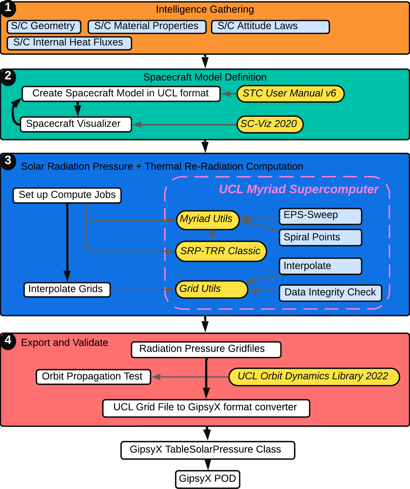

Welcome to UCL SGNL's GitHub Wiki
Here you can find a list of our repositories and what each one is used for in the generation of radiation force models:
Here you can find a list of our repositories and what each one is used for in the generation of radiation force models:
Explain how to build a spacecraft radiation force model using our tools. Overview here.
JavaScript-based spacecraft model visualizer. To set up and access the visualizer, follow these steps:
C++-based solar radiation pressure and thermal re-radiation calculations. Detailed instructions for setting up the radiation force model computation on UCL's Myriad Research Compute Cluster remotely, transferring files, and running computations can be found in our Guide to Using SRP-TRR Classic.
The 2022 version of our full-fidelity C++ orbit propagator.